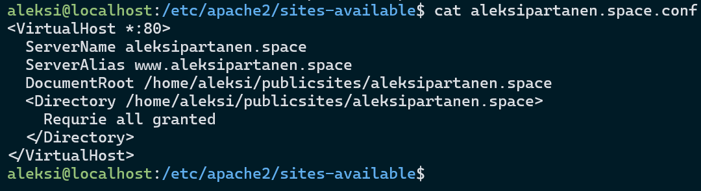

Lokaalin tietokoneen tiedot
GPU: Nvidia RTX 3070
CPU: AMD Ryzen 9 5900X 12-Core
RAM: 32GB
OS: Windows 11 23H2
Virtuaalipalvelimen tiedot
CPU: 1 Core
RAM: 1GB
OS: Debian 12
Harjoitus 6: Salataampa
x) Tiivistelmä
Let's Encrypt 2024(Let's Encrypt)
- Tekee HTTPS palvelimen käytöstä mahdollista
- ACME käyttäjä sovellus auttaa tunnistautumisessa
- Käyttää julkista avainta tunnistamiseen
The Apache Software Foundation 2025 (The Apache Software Foundation)
a) Let's
Aloitetaan harjoitus kirjautumalla palvelimelle. Kirjautuminen onnistuu ilman salasanaa normaalisti. Webbisivu näkyy oikein domainilla. Seuraavaksi aukaisen 443/tcp portin https yhteyttä varten. Käytän ensiksi komentoa sudo ufw status, jolla tarkistan mitkä portit ovat tällä hetkellä auki. 22 ssh yhteyttä varten sekä 80 http yhteyttä varten ovat auki kuten pitääkin. Aukaisen 443 portin komennolla sudo ufw allow 443/tcp.

Lataan certbotin sekä sen tarvitseman python apache paketin komennolla sudo apt-get install certbot python3-certbot-apache.
Tässä vaiheessa huomaan että webbisivuni pyörii ilman name based virtual serveriä tällä hetkellä. Teen tarvittavat conffaukset tässä vaiheessa, koska en usko että certbot toimii ilman oikeaa conf tiedostoa. Teen kansion publicsites käyttäjän aleksi alle, jonne teen aleksipartanen.space kansion. Kansioon teen vain index.html tiedoston, jonne laitan html sisällön. /etc/apache2/sites-available/ kansioon teen aleksipartanen.space.conf tiedoston, jonne laitan conffaukset. Nyt lisään komennolla sudo a2ensite aleksipartanen.space apachen sites-available kansiossa, joka laittaa sivuston päälle. Käynnistän myös apachen uudelleen. Tässä vaiheessa huomaan, että saan forbidden virheilmoituksen nettisivulleni. Muistan, että todennäköisesti tämä johtuu oikeukista ja tarkistan asian /var/log/apache2/error.log tiedostosta ja totean oletukseni oikeaksi. Apachella ei ollut execute oikeutta /home/aleksi kansioon, ja lisään sen komennolla chmod o+x aleksi. Nyt webbisivu näyttää oikein index.html tiedoston sisällön. Subdomainit näyttävät vieläkin apachen oletus sivun, joka näyttää tällä hetkellä laser tekstiä.
Käyttöikeus virhe
Tässä vaiheessa uskallan jo rueta tekemään TLS sertifikaatti tehtävää. Ajan komennon sudo certbot --register-unsafely-without-email --apache --domains aleksipartanen.space www.aleksipartanen.space. Käytän --register-unsafely-without-email lippua, koska en halua sähköpostia tämän harjoitus domainin sertifikaateista. Sertifikaatin tekeminen onnistui.
Nyt verkkosivu ohjaa liikenteen automaattisesti porttiin 443 ja osoitekentässä ei näy enää Chromella Not secure tekstiä. aleksipartanen.space.conf tiedostosta myös huomaan, että sinne on tullut certbotin tekemänä RewriteEngine, kaksi RewriteCond sekä RewriteRule rivit.
b) A-rating
Tämä onkin hieman nopeampi tehtävä. Kokeilen SSL Labs sivustoa sertifikaattien tarkastamiseen. Sivulta löytyy, että sivustoltani nyt löytyy TLS sertifikaatti. SSL luokitukseni sivuston mukaan on myös A.
Tehtävänanto
h6 Salataampa (Karvinen 2025)Lähteet
- The Apache Software Foundation. SSL/TLS Strong Encryption: How-To. Luettavissa: https://httpd.apache.org/docs/2.4/ssl/ssl_howto.html#configexample Luettu: 30.9.2025
- Let's Encrypt. How it works. Luettavissa: https://letsencrypt.org/how-it-works/ Luettu: 30.9.2025
- Karvinen, T. 2025. Linux Palvelimet. Tero Karvinen. Luettavissa: https://terokarvinen.com/linux-palvelimet/#h6-salataampa. Luettu: 30.9.2025.